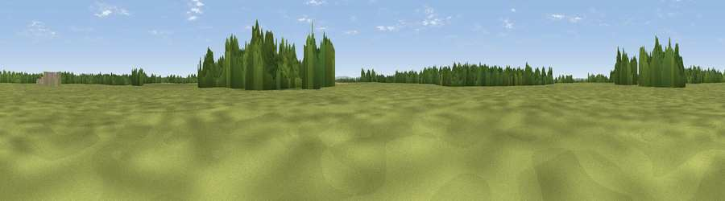

Hill Top
#45195 in England · top 91% of its area beats it · near Dibden PurlieuThe view, rendered

A 360° render of this exact spot computed from the terrain model, tree cover and land cover — summer colours, afternoon light, calibrated against photographs of famous viewpoints. Real trees, hedges and buildings will differ in detail.
The panorama
Grey silhouette: terrain skyline in each direction (720 bearings, Earth curvature and refraction included). Dashed green: skyline with trees (+15 m) and buildings (+8 m) as obstacles. Blue strip: how far the ground is visible on each bearing.
Where the view opens
Wedge length = distance to the farthest visible ground on that bearing (vegetation-aware). Rings at 10, 25 and 50 km.
What fills the view
76% grassland · 20% woodland · 3% cropland · 2% built-up
Angular shares of the visible panorama (visual magnitude), not map area. Landscape diversity 0.31 (0–1 Shannon).
Key numbers
More beautiful places nearby
The staircase of upgrades: each row has a higher view potential than everything closer. Driving times are estimates from straight-line distance, calibrated against real road routing — check an actual route before setting out.
| Place | Direction | Drive | Score |
|---|---|---|---|
| Viewpoint near Dibden | NNW · 2 km | ~5 min | 23.1 |
| Windmoor Hill | N · 4 km | ~9 min | 25.4 |
| Viewpoint near Netley | ENE · 7 km | ~14 min | 25.7 |
| Viewpoint near Butlocks Heath | NE · 7 km | ~15 min | 28.8 |
| Viewpoint near Langley | SE · 8 km | ~16 min | 38.2 |
| Viewpoint near Langley | SE · 8 km | ~16 min | 38.7 |
| Viewpoint near Lower Swanwick | NE · 11 km | ~20 min | 42.4 |
| Viewpoint near Emery Down | WNW · 12 km | ~22 min | 44.9 |
50.83948, -1.42774 · source: osm peak · position refined by local search. Computed location — check access rights before visiting.